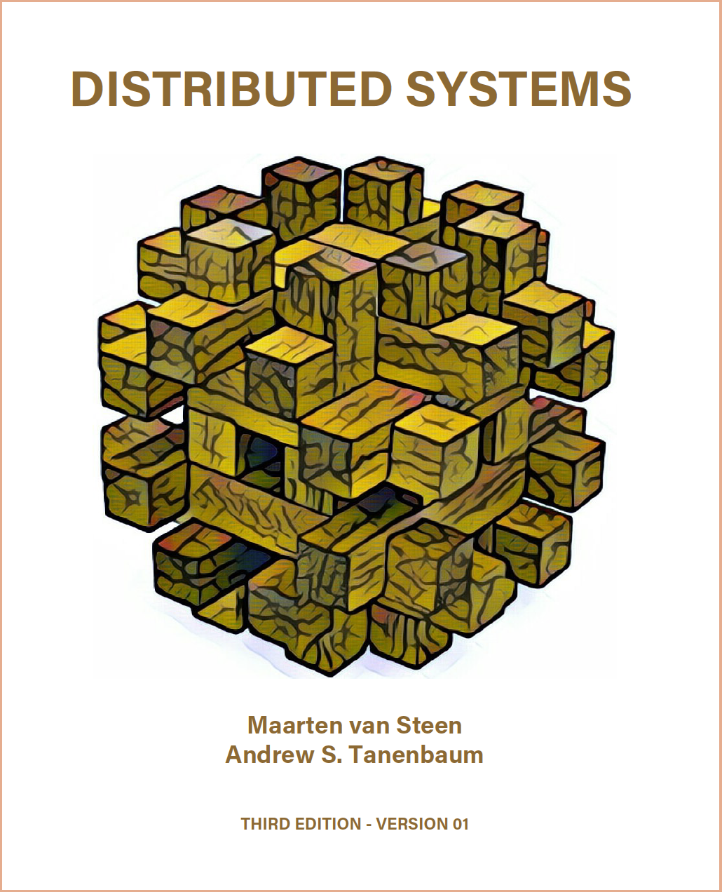
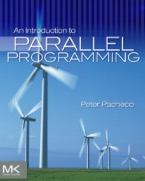

| Week | Category | Topics | Homework/Project/Paper |
|---|---|---|---|
| Week 1 | Parallel topic | Introduction | Reference |
| Week 2 | Hardware Basics & Distributed System Overview | Warmup project | |
| Week 3 | Labor Day (no class), Lock | ||
| Week 4 | Pthread | Pthread project | |
| Week 5 | MPI Basics | ||
| Week 6 | MPI Communication | ||
| Week 7 | Lab for project and presentation | MPI project | |
| Week 8 | Midexam, Exam answer | ||
| Week 9 | Distributed topic | Distributed Coordination-1 (Distributed mutex, Distributed election) | Presentation |
| Week 10 | Distributed Coordination-2 (Distributed consensus, Distributed locks) | ||
| Week 11 | Distributed Management (Centralized structure, Decentralized structure) | ||
| Week 12 | Distributed Computation (MapReduce, Spark) | ||
| Week 13 | Distributed Storage (CAP, distributed storage) | ||
| Week 14 | Thanksgiving Break (no class) | ||
| Week 15 | Distributed Communication (publish and subscribe, message queue) | ||
| Week 16 | Review, Final exam |
 
Here are some other reference books besides the course slides.
Distributed Systems 3rd edition (2017), https://www.distributed-systems.net/index.php/books/distributed-systems-3rd-edition-2017/
M. van Steen and A.S. Tanenbaum
ISBN-13: 978-1543057386
An Introduction to Parallel Programming (2011), https://www.ime.usp.br/~alvaroma/ucsp/parallel/an_introduction_to_parallel_programming_-_peter_s._pacheco.pdf
Peter S. Pacheco
ISBN-13: 978-0-12-374260-5
| This course was funded by ALG R27, https://www.affordablelearninggeorgia.org/ |
{kind=link}